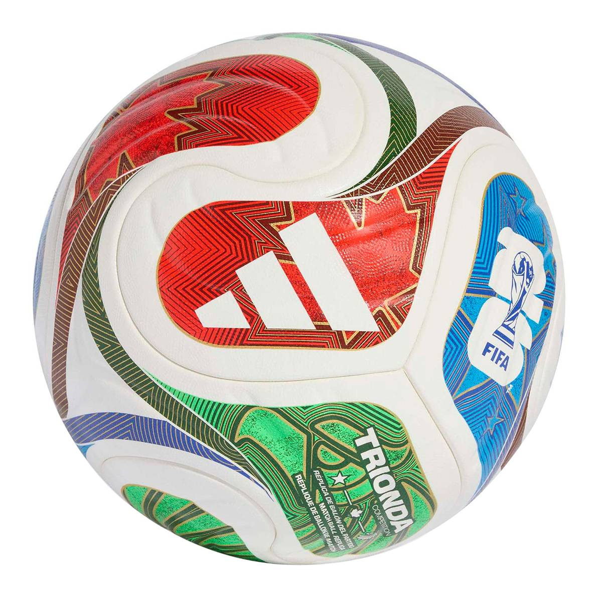
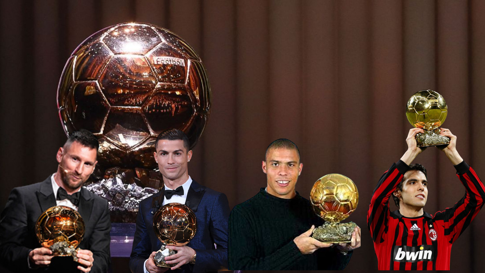

El ranking
Ordenados por cantidad de Balones de Oro ganados. Cuando hay empate, van en orden cronológico. El décimo puesto es para un campeón único que marcó una era.
-
1
Lionel Messi
Argentina · 2009, 2010, 2011, 2012, 2015, 2019, 2021, 2023
8 -
2
Cristiano Ronaldo
Portugal · 2008, 2013, 2014, 2016, 2017
5 -
3
Michel Platini
Francia · 1983, 1984, 1985
3 -
4
Johan Cruyff
Países Bajos · 1971, 1973, 1974
3 -
5
Marco van Basten
Países Bajos · 1988, 1989, 1992
3 -
6
Alfredo Di Stéfano
Argentina / España · 1957, 1959
2 -
7
Franz Beckenbauer
Alemania · 1972, 1976
2 -
8
Karl-Heinz Rummenigge
Alemania · 1980, 1981
2 -
9
Ronaldo Nazário
Brasil · 1997, 2002
2 -
10
Luka Modrić
Croacia · 2018. Rompió el dominio de Messi y Cristiano tras diez años.
1
Cómo nació el premio
El Balón de Oro lo creó la revista francesa France Football en 1956. El primer ganador fue Stanley Matthews, y durante décadas el premio fue exclusivo para jugadores europeos.
Desde 1995 pueden ganarlo jugadores de cualquier nacionalidad que jueguen en Europa, y desde 2007 se abrió a todo el mundo. Así comenzó la era de Messi y Cristiano Ronaldo, que se repartieron 13 de los premios entre 2008 y 2023.
Galería

